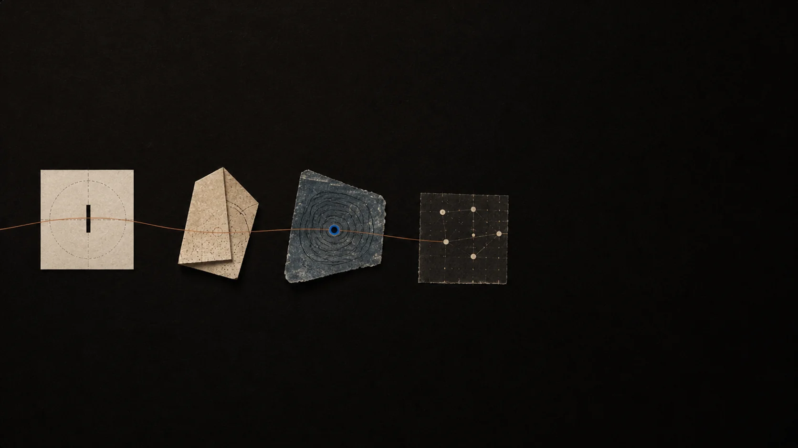

01 / Name it
Start with one unfinished thought.
Describe the exact point that feels confusing, surprising, or fragile. Specific uncertainty gives the conversation something to hold.
Learning guide
Socrates works best when the goal is not speed, but a more reliable way to return to an idea.

A useful beginning
A good first prompt is not a polished request. It is the honest edge: “I can follow the steps until this part,” or “I do not see why this must be true.”
Try it with Socrates01 / Name it
Describe the exact point that feels confusing, surprising, or fragile. Specific uncertainty gives the conversation something to hold.
02 / Work it
Let the tutor test the idea with examples, counterexamples, and smaller steps. The goal is not to hide the effort—it is to direct it.
03 / Explain it
After a useful explanation, try a short summary. Where your version becomes vague is usually where the next question belongs.
04 / Revisit it
Use recall to make an idea available later, then connect it with the rest of your map when a new question arrives.
A worked example
The example below uses a single paragraph from an introductory statistics textbook. It is short, but it shows how the four moves connect in a real session.
Move 01 — Name
The honest edge. You know the formula, you can compute it, but the move from “deviation from the mean” to “square it” feels unmotivated. Socrates reads the surrounding map and notices this is your third question about spread.
Move 02 — Work
Socrates agrees this is a sharp question and walks the change through a small dataset. You watch the answer change as the values move further from the mean, and you begin to see why squaring is a useful choice.
Move 03 — Explain
You try: “Squaring makes the distance from the mean matter more when it is large, and absolute value would still work but is harder to differentiate.” Socrates marks the second half as the place to push next.
Move 04 —Revisit
Two days later Socrates returns with a fresh example and asks you to redo the squaring argument from scratch. The idea is now yours, and the map shows how it links to your earlier questions about averages.
Common pitfalls
These are the patterns we see most often when a session is not as useful as it should be. Recognising them is half the work.
Pitfall 01
If your first prompt is “explain X,” Socrates will explain X. You will learn less than if you had typed the smallest sentence about the part you do not yet see.
Pitfall 02
A session that does not produce a single sentence in your own words is a session you will have to redo. The act of summarising is the recall before the recall.
Pitfall 03
Knowledge lives in the connections between sessions. Skipping recall means every session is your first, and the tutor has to rebuild context from scratch.